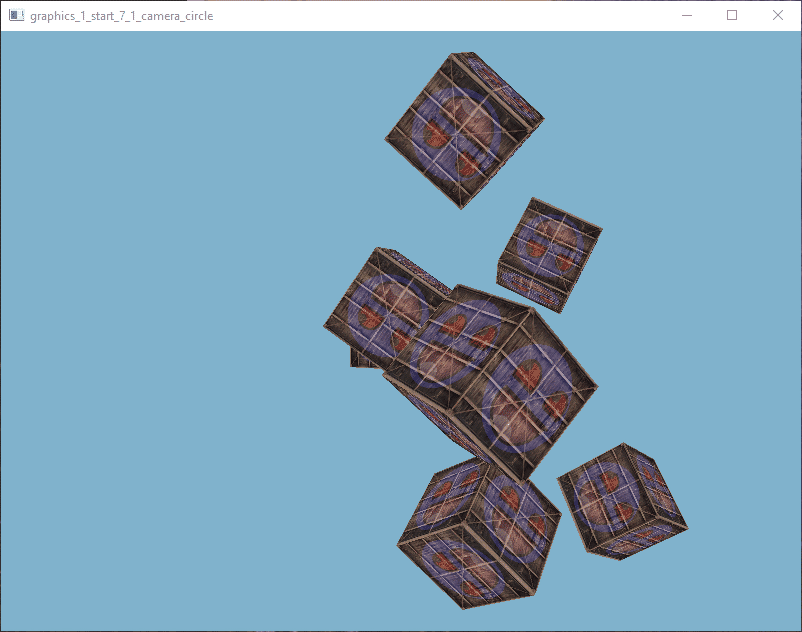

result

source
/*
* 7_1_camera_circle.c
* Copyright (C) 2020 - All rights reserved
* Another Memory Ends - amedevcentral@gmail.com
*/
#include "framework.h"
const size_t gc_core_memory_size = 0;
void resize_callback(ameWindow* window, uint width, uint height);
void input_callback(ameWindow* window, const InputEvent* event);
typedef struct {
vec3 pos;
} Vertex;
int main(int argc, char** argv)
{
(void)argc;
(void)argv;
f_initialize(C_OUTPUT_FULL, 0);
ameWindow *window = f_window_create("graphics_1_start_7_1_camera_circle", 800, 600, WINDOW_STYLE_DEFAULT);
f_window_set_input_callback(window, input_callback);
f_window_set_resize_callback(window, resize_callback);
f_window_set_current(window);
ColorVec4 clear_color = { 0.5f, 0.7f, 0.8f, 1.0f };
gfx_clear_color_set(clear_color);
GfxShaderLink link;
link.link_type = GFX_SHADER_LINK_DEFAULT_BINDING;
gfx_id shader = gfx_shader_create_from_files("./7_1_vertex.glsl", "./7_1_fragment.glsl", &link);
GfxAttributeFormat format = gfx_attribute_format_init();
gfx_attribute_format_add(&format, "pos", GFX_ATTRIBUTE_VEC3);
gfx_attribute_format_add(&format, "uv", GFX_ATTRIBUTE_VEC2);
gfx_id vertex_array = gfx_vertex_array_create();
gfx_id vertex_buffer = gfx_vertex_buffer_create();
gfx_vertex_array_bind(vertex_array);
gfx_vertex_buffer_bind(vertex_buffer);
gfx_attributes_enable_interleaved(&format);
float vertices[] = {
-0.5f, -0.5f, -0.5f, 0.0f, 0.0f,
0.5f, -0.5f, -0.5f, 1.0f, 0.0f,
0.5f, 0.5f, -0.5f, 1.0f, 1.0f,
0.5f, 0.5f, -0.5f, 1.0f, 1.0f,
-0.5f, 0.5f, -0.5f, 0.0f, 1.0f,
-0.5f, -0.5f, -0.5f, 0.0f, 0.0f,
-0.5f, -0.5f, 0.5f, 0.0f, 0.0f,
0.5f, -0.5f, 0.5f, 1.0f, 0.0f,
0.5f, 0.5f, 0.5f, 1.0f, 1.0f,
0.5f, 0.5f, 0.5f, 1.0f, 1.0f,
-0.5f, 0.5f, 0.5f, 0.0f, 1.0f,
-0.5f, -0.5f, 0.5f, 0.0f, 0.0f,
-0.5f, 0.5f, 0.5f, 1.0f, 0.0f,
-0.5f, 0.5f, -0.5f, 1.0f, 1.0f,
-0.5f, -0.5f, -0.5f, 0.0f, 1.0f,
-0.5f, -0.5f, -0.5f, 0.0f, 1.0f,
-0.5f, -0.5f, 0.5f, 0.0f, 0.0f,
-0.5f, 0.5f, 0.5f, 1.0f, 0.0f,
0.5f, 0.5f, 0.5f, 1.0f, 0.0f,
0.5f, 0.5f, -0.5f, 1.0f, 1.0f,
0.5f, -0.5f, -0.5f, 0.0f, 1.0f,
0.5f, -0.5f, -0.5f, 0.0f, 1.0f,
0.5f, -0.5f, 0.5f, 0.0f, 0.0f,
0.5f, 0.5f, 0.5f, 1.0f, 0.0f,
-0.5f, -0.5f, -0.5f, 0.0f, 1.0f,
0.5f, -0.5f, -0.5f, 1.0f, 1.0f,
0.5f, -0.5f, 0.5f, 1.0f, 0.0f,
0.5f, -0.5f, 0.5f, 1.0f, 0.0f,
-0.5f, -0.5f, 0.5f, 0.0f, 0.0f,
-0.5f, -0.5f, -0.5f, 0.0f, 1.0f,
-0.5f, 0.5f, -0.5f, 0.0f, 1.0f,
0.5f, 0.5f, -0.5f, 1.0f, 1.0f,
0.5f, 0.5f, 0.5f, 1.0f, 0.0f,
0.5f, 0.5f, 0.5f, 1.0f, 0.0f,
-0.5f, 0.5f, 0.5f, 0.0f, 0.0f,
-0.5f, 0.5f, -0.5f, 0.0f, 1.0f
};
gfx_vertex_buffer_copy_data((const uint8*)vertices, sizeof(vertices), GFX_BUFFER_STATIC);
gfx_vertex_array_bind(0);
GfxTextureParameters param = gc_gfx_texture_parameters_default;
param.s_wrapping = GFX_TEXTURE_WRAP_STRETCHED_EDGE;
param.t_wrapping = GFX_TEXTURE_WRAP_STRETCHED_EDGE;
Image_ptr container = i_image_alloc_from_file("./gfx_test_resources/container.jpg");
gfx_id texture1 = gfx_texture_import(container, ¶m);
i_image_free(container);
Image_ptr face = i_image_alloc_from_file("./gfx_test_resources/awesomeface.png");
param.s_wrapping = GFX_TEXTURE_WRAP_REPEAT;
param.t_wrapping = GFX_TEXTURE_WRAP_REPEAT;
gfx_id texture2 = gfx_texture_import(face, ¶m);
i_image_free(face);
gfx_shader_use(shader);
gfx_uniform_sampler_2d_set(gfx_shader_uniform_location(shader, "texture1"), 0);
gfx_uniform_sampler_2d_set(gfx_shader_uniform_location(shader, "texture2"), 1);
int model_location = gfx_shader_uniform_location(shader, "model");
int view_location = gfx_shader_uniform_location(shader, "view");
int projection_location = gfx_shader_uniform_location(shader, "projection");
mat4 model;
mat4 view;
mat4 projection;
gfx_depth_testing(true);
vec3 cube_positions[] = {
{ 0.0f, 0.0f, 0.0f },
{ 2.0f, 5.0f, -15.0f },
{ -1.5f, -2.2f, -2.5f },
{ -3.8f, -2.0f, -12.3f },
{ 2.4f, -0.4f, -3.5f },
{ -1.7f, 3.0f, -7.5f },
{ 1.3f, -2.0f, -2.5f },
{ 1.5f, 2.0f, -2.5f },
{ 1.5f, 0.2f, -1.5f },
{ -1.3f, 1.0f, -1.5f }
};
gfx_shader_use(shader);
m_mat4_perspective_fov_rh(m_radians(45.0f), f_window_aspect(window), 0.1f, 100.0f, projection);
gfx_uniform_mat4_set(projection_location, projection);
while (f_window_should_close(window) == false)
{
f_window_process_messages(window);;
gfx_framebuffer_bind(0);
gfx_clear(true, true, false);
gfx_texture_activate(0);
gfx_texture_bind(texture1);
gfx_texture_activate(1);
gfx_texture_bind(texture2);
gfx_shader_use(shader);
gfx_vertex_array_bind(vertex_array);
m_mat4_identity(view);
float radius = 10.0f;
float cam_x = sinf((float)c_time_seconds()) * radius;
float cam_z = cosf((float)c_time_seconds()) * radius;
vec3 eye;
eye[0] = cam_x;
eye[1] = 0.0f;
eye[2] = cam_z;
vec3 at = { 0.0f, 0.0f, 0.0f };
vec3 up = { 0.0f, 1.0f, 0.0f };
m_mat4_look_at_rh(eye, at, up, view);
gfx_uniform_mat4_set(view_location, view);
vec3 axis = { 1.0f, 0.3f, 0.5f };
for (uint i = 0; i < 10; ++i)
{
m_mat4_identity(model);
m_mat4_translate(model, cube_positions[i], model);
float angle = 20.0f * i;
m_mat4_rotate(model, m_radians(angle), axis, model);
gfx_uniform_mat4_set(model_location, model);
gfx_draw_vertices(GFX_VERTEX_TRIANGLE, 36);
}
f_window_swap_buffers(window);
}
gfx_shader_delete(shader);
gfx_vertex_array_delete(vertex_array);
gfx_vertex_buffer_delete(vertex_buffer);
gfx_texture_delete(texture1);
gfx_texture_delete(texture2);
f_window_delete(window);
f_terminate();
return 0;
}
void resize_callback(ameWindow* window, uint width, uint height)
{
if (gfx_context_get() == f_window_context(window))
{
gfx_viewport_set_values(0, 0, width, height);
}
}
void input_callback(ameWindow* window, const InputEvent* event)
{
switch (event->type)
{
case INPUT_EVENT_KEYBOARD_KEY_DOWN:
if (f_input_event_key(event) == VIRTUAL_KEY_ESC)
f_window_send_close(window);
default:
break;
}
}